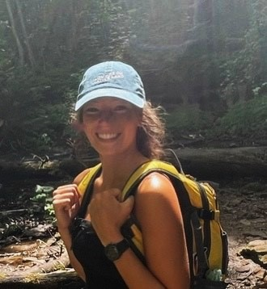
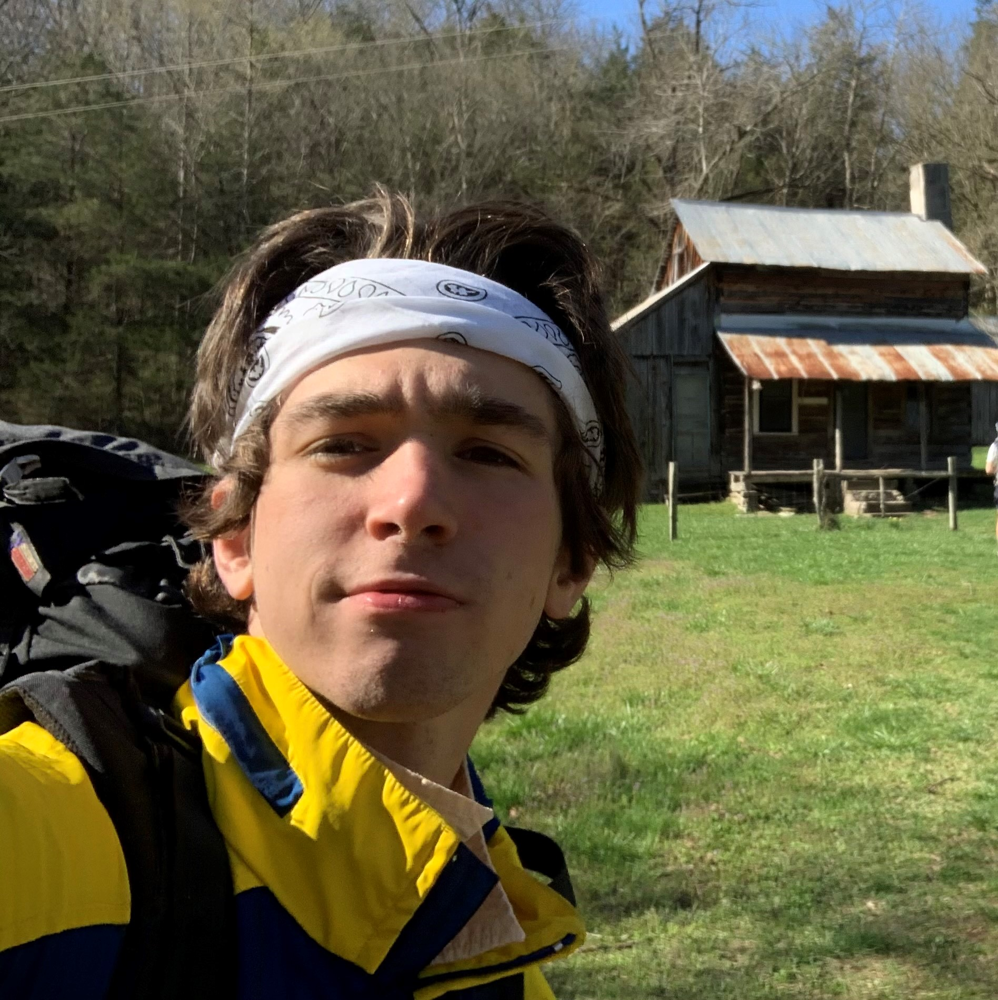

About
This web report was developed by Liv, Nick, Silas and Randy of the Conservation Data Lab and Northern Michigan University with the following goals:
- Support planning efforts by the Marquette County Planning, Community Development, Forestry and Recreation Division
- Practice GitHub, R, QGIS and ArcGIS Pro techniques
- Contribute to conservation in the central Upper Peninsula in general.
Acknowledgements
We’d like to first acknowledge Robert Zeil (aka ‘Zeke’) who introduced us to, and taught Silas how to implement the Wildfire Exposure Risk calculations. Learn more about Zeke at https://www.linkedin.com/in/robertziel/ and https://wildfiretoday.com/2020/05/06/robert-ziel-receives-paul-gleason-lead-by-example-award/.
We’d like to also thank Sven Gonstead and Emily Leach of Marquette County for the inspiration, opportunity and for meeting with us!
And importantly, Dr. Matt Van Grisven of NMU for moral, technical and space support!
Developers, in alphabetical order
Liv Maynard

Liv is originally from the Grand Rapids area of Michigan, and had the privilege of growing up exploring the forests, lakes, and wetlands of the Lower Peninsula. She is a recent graduate from Northern Michigan University (NMU) with a B.S. in Environmental Science (natural resources emphasis) and a minor in Native American Studies. She has worked with Superior Watershed Partnership in the Great Lakes Climate Corps (GLCC) alongside US Forest Service and Keweenaw Bay Indian Community Natural Resources Department partners for the past two summers. Her studies at NMU and conservation work with GLCC deepened her passion for working outdoors and learning more about the natural world. In the off season, Liv works as a ski instructor, specializing in teaching children. She is looking forward to continuing conservation work in a position with the US Forest Service as a Hydrology Technician in Canjilon, New Mexico.
Liv and Nick (below) were responsible for the “Late Succession” Section of the report.
Nick Burns

Nick graduated from Northern Michigan University in 2023 with a B.S. in Environmental Science and a Certificate in Geographic Information Systems. He has been working in environmental conservation for the past 6 summers in both the mountains of New Mexico and the forests of the Upper Peninsula of Michigan. Nick enjoys the outdoors and hopes to combine his knowledge of environmental science and experience with GIS and land management in his future career.
Randy Swaty

Conservation ecologist with 20+ years’ experience working at scales from microbes to landscapes. Uses the best available scientific information combined with strong communication skills to inform decision-makers, influence policy, plan sustainable land management, and increase collaboration. Co-lead of the Conservation Data Lab, Ecologist with The Nature Conservancy and a Research Associate with Northern Michigan University.
Randy was responsible for the “Current” page, for deployment of the site, and will be the main contact for questions. He can be reached at rswaty@tnc.org.
Silas Pickhardt

Silas grew up in Madison, Wisconsin and moved to Marquette, Michigan in the fall of 2021 to pursue a degree in Fisheries and Wildlife Management at Northern Michigan University. After an internship with Oregon State University in the summer of 2023, he hopes to point his career in the direction of forestry in the coming years. He was introduced to the CDL after a short impromptu meeting with Randy. Outside of his career pursuit, Silas spends lots of time outside climbing, surfing, hiking and enjoys playing guitar as well.